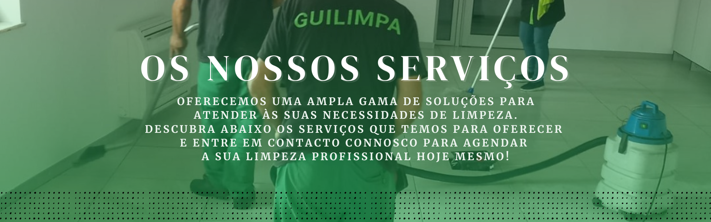
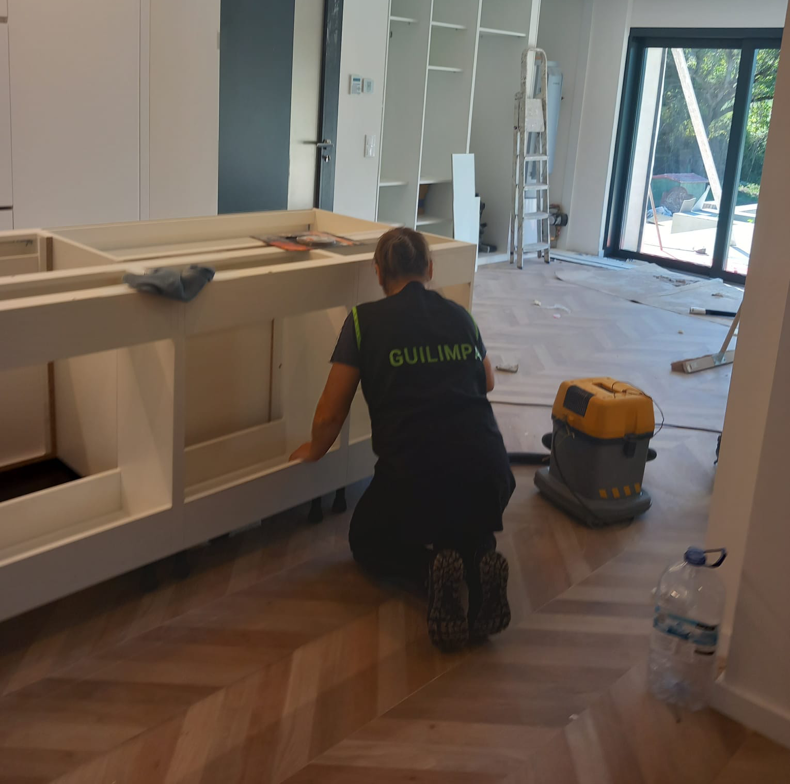
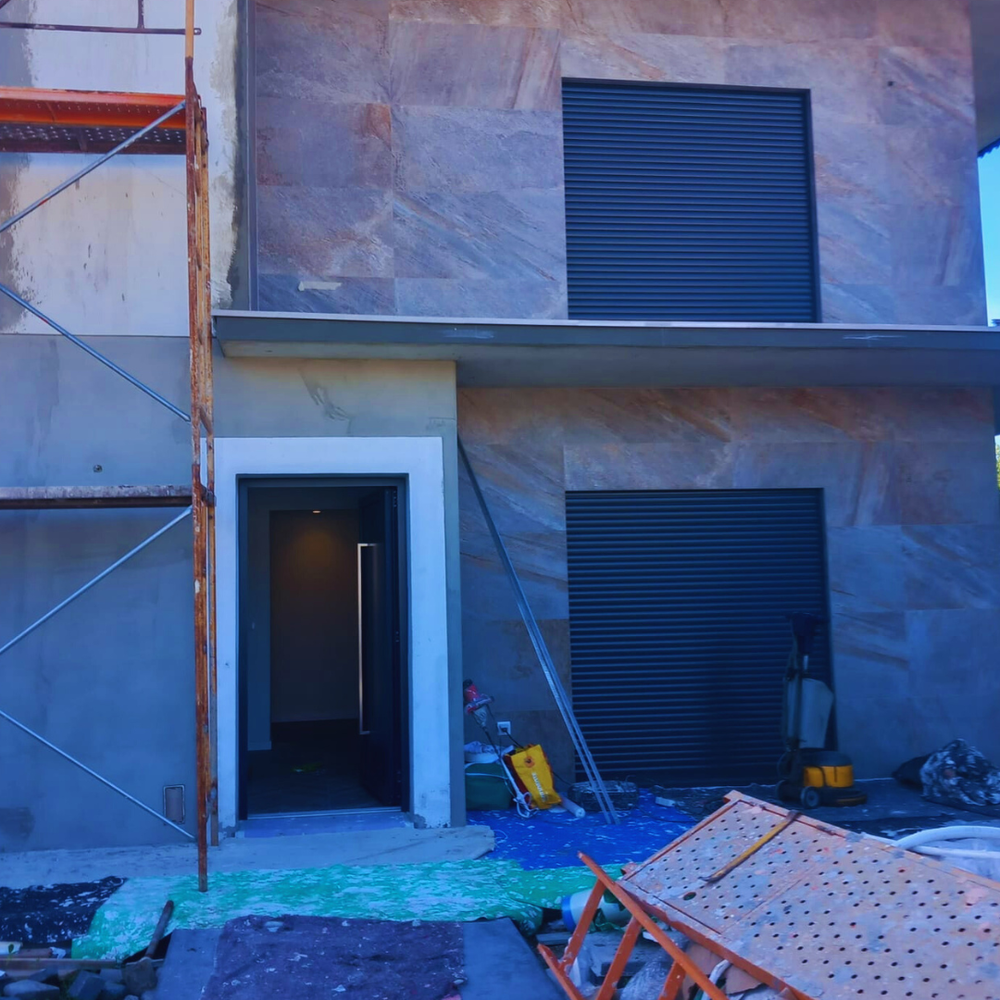
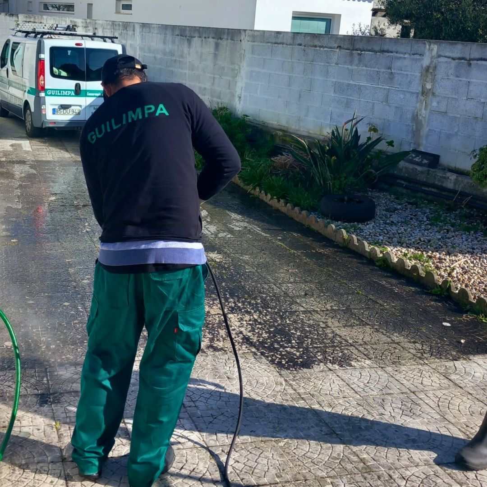
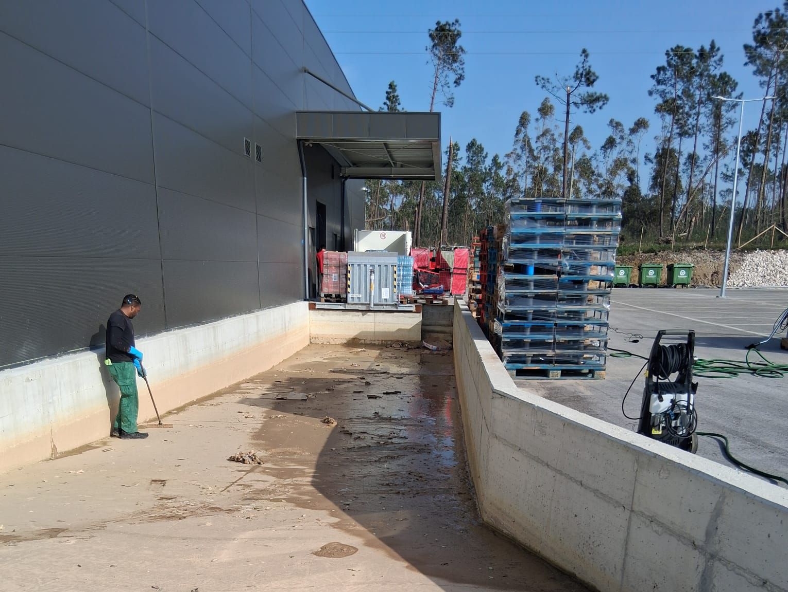

Limpeza final de obra
Remoção completa de detritos e limpeza detalhada após qualquer obra, garantindo que o espaço esteja pronto para uso imediato.
Como é feito
Utilizamos técnicas e equipamentos indicados para a remoção total de poeiras finas, resíduos de tinta, restos de cimento e todos os outros detritos de construção que ficam acumulados em superfícies e recantos.
Materiais utilizados
Seleção de produtos industriais, aspiradores de alta eficiência (com filtros HEPA para poeiras finas) e detergentes específicos para superfícies delicadas como vidro, cerâmica e madeira.
- Escritórios e Lojas comerciais recém-construídas
- Moradias e Casas particulares
- Qualquer espaço após remodelação
Limpeza industrial
Intervenções de limpeza especializada em ambientes de produção, armazéns e instalações industriais, focadas na segurança, eficiência operacional e conformidade com as normas setoriais.
Como é feito
Remoção de resíduos de produção, óleos e gorduras, limpeza de pavimentos industriais, estruturas em altura, maquinaria e manutenção de zonas de carga e descarga.
Materiais utilizados
Utilização de desengordurantes e solventes industriais para uso pesado, lavadoras e varredoras de pavimentos com condutor sentado, e equipamentos de aspiração industrial de alta potência.
- Fábricas e Unidades de Produção
- Instalações de Manufatura
- Armazéns de Logística e Distribuição
Limpeza na área da saúde
Execução de protocolos rigorosos de higiene e desinfeção em hospitais, clínicas, laboratórios e centros de saúde, para a prevenção de infeções e segurança de pacientes e profissionais.
Como é feito
Processos detalhados de desinfeção de superfícies críticas (blocos operatórios, unidades de cuidados intensivos, quartos de doentes), gestão de resíduos hospitalares e higienização de áreas de espera e circulação.
Materiais utilizados
Utilizamos desinfetantes de nível hospitalar com eficácia comprovada contra patógenos, materiais de limpeza de uso único (descartáveis), e carrinhos de limpeza ergonómicos e fechados para segurança biológica.
- Centros de Saúde Postos Médicos
- Hospitais Clínicas
- Laboratórios de Análises Clínicas
Limpeza em altura
Acesso e limpeza segura de fachadas de edifícios, vidros altos, estruturas metálicas e outras áreas de difícil acesso, restaurando a aparência exterior e prolongando a vida útil dos materiais.
Como é feito
Aplicação de técnicas de acesso por corda (rapel), utilização de plataformas elevatórias e sistemas de água pura com varões extensíveis, com total prioridade à segurança dos operadores.
Materiais utilizados
Contamos com uma gama de equipamentos de proteção individual (EPIs) de última geração, plataformas de trabalho aéreo certificadas, sistemas de purificação de água e detergentes específicos para repelir sujidade.
- Fachadas de Edifícios Comerciais e Residenciais
- Limpeza de Vidros em Altura
- Sinalética e Revestimentos Externos



Limpeza de Parques de Estacionamento
Higienização de parques de estacionamento cobertos e ao ar livre, melhorar a segurança, estética e funcionalidade, e remover sujidade acumulada por veículos e peões.
Como é feito
Varredura mecânica e lavagem sob pressão de pavimentos, remoção de óleos, limpeza de rampas de acesso, áreas de escadas e elevadores, e manutenção da sinalização horizontal e vertical.
Materiais utilizados
Equipamentos de limpeza de pavimentos de alto rendimento, detergentes específicos para remoção de óleos, e equipamentos de lavagem a alta pressão para áreas com sujidade incrustada.
- Parques de Condomínios e Empresas
- Parques de Estacionamento Cobertos e Subterrâneos
- Áreas de Estacionamento Privadas
Limpeza em Espaços Públicos e Privados
Soluções abrangentes de limpeza e manutenção adaptadas a todas as escalas, desde grandes áreas de domínio público até ambientes de acesso privado restrito, garantindo padrões elevados de higiene e conservação.
Como é feito
Desenvolvemos planos de intervenção personalizados que incluem varredura, lavagem de pavimentos, desinfetação de superfícies e manutenção de áreas comuns, respeitando sempre as normas de segurança e a privacidade de cada local.
Materiais utilizados
Equipamentos de alta performance como lavadoras de pressão, varredoras mecânicas e aspiradores industriais, aliados a produtos de limpeza certificados e amigos do ambiente (ECO-friendly).
- Condomínios e Urbanizações Privadas
- Espaços de Lazer Parques Públicos
- Zonas Pedonais e Áreas de Acesso Restrito
Limpeza na área de ensino
Manutenção rigorosa da higiene em escolas, creches, universidades e centros de formação, promovendo um ambiente seguro, saudável e produtivo para alunos e professores.
Como é feito
Aplicamos protocolos de limpeza diária para salas de aula e áreas comuns, com foco especial na desinfeção profunda de superfícies de alto contacto, casas de banho e cantinas, seguindo normas sanitárias rigorosas.
Materiais utilizados
Utilizamos produtos de limpeza e desinfeção com certificação de segurança para uso em ambientes frequentados por crianças, equipamentos de limpeza a vapor para desinfeção natural e materiais de higiene específicos.
- Escolas Básicas e Secundárias
- Institutos de Idiomas e Formação
- Campus Universitários
Limpeza nas áreas comerciais
Manutenção impecável de escritórios, lojas, consultórios e espaços de trabalho, transmitindo profissionalismo e proporcionando bem-estar a colaboradores e clientes.
Como é feito
Limpeza e manutenção de estações de trabalho, pavimentos, copas, salas de reunião e zonas de atendimento, com horários adaptados à sua atividade comercial para não perturbar o fluxo de trabalho.
Materiais utilizados
Selecionamos produtos multiusos de alta qualidade para diferentes superfícies (madeira, vidro, metal), materiais de limpeza de microfibras para evitar riscos e mops profissionais para pavimentos.
- Escritórios Corporativos
- Agências e Ateliers
- Lojas de Retalho e Boutiques
Receba já o seu orçamento gratuito
A equipa Guilimpa une o profissionalismo à dedicação para garantir espaços perfeitos. Se valoriza o trabalho bem feito e a integridade de uma equipa de confiança, estamos prontos para o ajudar!
Solicitar Orçamento